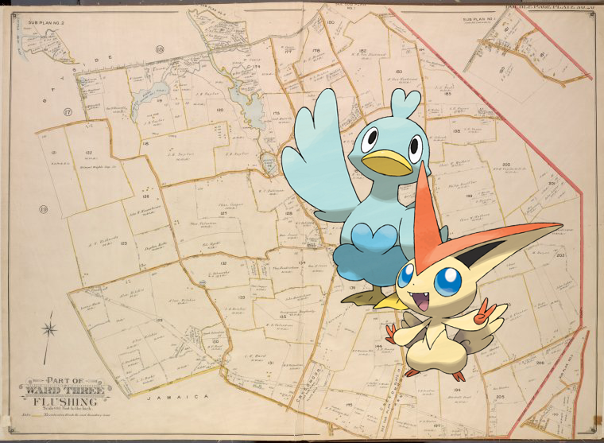

Pokémon in the NYPL archives
2018-6-23 14:10:11

Ducklett, Victini ;
Queens, Vol. 3, Double Page Plate No. 20; Part of ward Three Sub Plan No. 1; [Map bounded by Broadway, Little Neck Road, West end Drive, Lakeville Road]; Part of ward Three Sub Plan No. 2; [Map bounded by Little Neck Bay]; Part of ward Three Sub Plan No. 3; [Map bounded by Rocky Hill Road, Jericho Turnpike, Hamilton Ave.; Including Pine St., Maple St., Chestnut St.]; Part of ward Three Flushing; [Map bounded by Broadway, North Hempstead Turnpike, Bell Ave., Boundary Line of City of New York and Nassau County, Lakeville Road, Littleneck Road, Hyde Park Road, Clinton Ave., Vanzandt Ave., 1st Ave., Alley Road, East Alley Road, West Alley Road, Lawrence Ave., Hamilton Ave., Boundary Line of Jamaica and Flushing, Rocky Hill Road, Queens Road, Black Stump Road, Cedar Lane, Maryin Road, Titus Ave.; Including Pine St.]